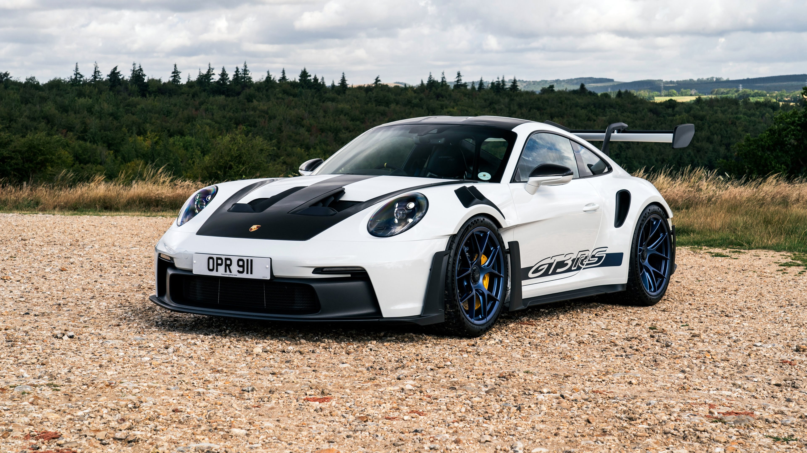

El Porsche 911 GT3 RS (992.2) es una versión de alto rendimiento del icónico Porsche 911, lanzada en 2021. Esta variante se centra en ofrecer una experiencia de conducción extrema tanto en carretera como en pista, con un enfoque en la aerodinámica, el rendimiento del motor y la reducción de peso. El GT3 RS es conocido por su motor atmosférico de seis cilindros opuestos, que proporciona una potencia impresionante y un sonido característico que entusiasma a los entusiastas de los automóviles deportivos.
Desde su lanzamiento, el Porsche 911 GT3 RS ha recibido elogios por su rendimiento excepcional y su manejo preciso. La versión 992.2 ha incorporado mejoras en la aerodinámica, incluyendo un alerón trasero más grande y un difusor optimizado, lo que contribuye a una mayor carga aerodinámica y estabilidad a altas velocidades. Además, se han realizado ajustes en la suspensión y la dirección para mejorar la respuesta y el control del vehículo en curvas cerradas y en condiciones de alta velocidad.
El Porsche 911 GT3 RS ha sido reconocido como uno de los mejores automóviles deportivos de su clase, compitiendo con éxito en diversas competiciones y eventos de automovilismo. Su combinación de potencia, manejo y diseño aerodinámico lo convierte en una opción popular entre los entusiastas de los automóviles deportivos y los coleccionistas. La versión 992.2 del GT3 RS continúa consolidando la reputación de Porsche como fabricante de vehículos de alto rendimiento, ofreciendo una experiencia de conducción emocionante y memorable para aquellos que buscan lo mejor en ingeniería automotriz.